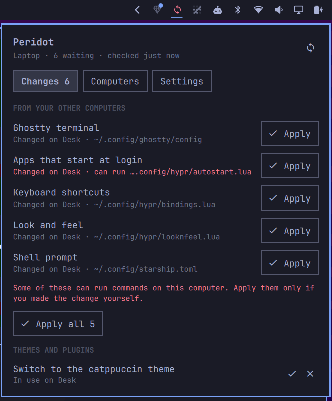

You own the machine. Peridot makes sure you own what's on it: every Omarchy computer you use stays matching, your whole setup is backed up where nobody can read it, and six words bring it back on a bare install. No account. No cloud. Nothing that can change the terms on you.
$ omarchy plugin add https://github.com/derekross/peridot.git --enable $ ~/.config/omarchy/plugins/derekross.peridot/dist/install.sh
Free software, for Omarchy on Arch. The installer asks before it touches anything.
Every other way to carry your setup between computers goes through an account: a private repo, a sync folder, a vendor's cloud. Each one comes with a login you don't control and a page like these.
Peridot has no account to suspend, no terms to update, and nothing readable to hand over. Your settings leave your computer encrypted, and only your computers can open them.
Rebind a key on the desk and the laptop offers it before you've stood up. Hyprland, the bar, the menu, your terminal, btop, starship, tmux, lazygit, mpv. Your theme, and the themes and plugins you installed.
Nothing changes on a computer until you apply it, unless you turn on automatic apply. Files that can run commands are always shown to you first. Every apply can be undone.
Two computers editing the same file is a conflict, not a coin toss: Peridot keeps both and lets you choose.
Everything Peridot syncs is also your backup, encrypted, on servers that cannot read it. The recovery kit is a page to print or save, plus six words to write down.
Together, the page and the words bring every setting back. Apart, they are useless to anyone who finds one of them.
Or skip the words: pair the new laptop from any computer you already use, and it gets everything from there.
Peridot moves your settings over Nostr, an open network of servers anyone can run, including you on a homelab. Pick the relays you trust, or run your own. No relay is special, and none of them is told anything.
Every file is encrypted on your computer before it leaves. Its name is a keyed hash, its size is padded to one of four classes, its timestamp is rounded to the hour, and it is signed by a key that is not your identity. Take a relay's disk and you hold blobs that say nothing.
The full protocol is public, in NIP.md, so anyone can check this rather than trust it.
A computer you understand, configured in files you can read, with no tollbooths and no gatekeepers between you and it. Your setup is yours, down to the keybinding.
Your identity is a key you hold, not an account someone grants. Servers are interchangeable and expendable. Nobody can suspend you, and nobody can change the terms on you.
Peridot is where they meet: a setup you own, carried by a network you own, readable by no one else. And because your identity is a standard Nostr key, it is already yours to use anywhere else on Nostr, with Opal or any client.
The new one shows a code. Type it on one you already use. Both screens show the same six digits, you both say yes, and it joins. Someone who glimpsed the code cannot: the digits come from a secret exchange the code only starts.
Share a screenshot, a file or your clipboard from Omarchy's Share menu. Encrypted on your computer; the key rides after the #, the part of a link a browser never sends to a server. Links expire in a week unless you say otherwise, and can be pulled any time.
Every theme and plugin from the community catalogs, with likes and reviews from real Omarchy users, ranked by the people you follow. Install in a click. Publish your own setup so someone else can run it whole.

On by default: Hyprland settings, the bar layout, menu additions and branding, terminal configs, btop, starship, tmux, lazygit, mpv, and your theme, themes and plugins.
Off until you turn them on, because they can run commands: what starts at login, .bashrc, Omarchy hooks, Neovim, Git settings, default apps.
Never, whatever you turn on: keys, tokens, keyrings, browser and Signal profiles, your monitor layout and input devices, and anything that looks like a secret.
Code already running as you can read the keyring, the socket and the files. Whoever holds your sync secret can push settings that run commands on your other computers, which is what syncing is, so every such file is shown first. A key kept in your login keyring is exactly as safe as your login and your disk encryption; Opal takes it out of Peridot's hands entirely.
Peridot is new. It works end to end, and it says so when it isn't sure. Report a problem as described in SECURITY.md.
Any Omarchy on Arch. The installer records everything it writes, checks every path before it changes anything, and asks before adding Private link entries to the Share menu. Without Rust it downloads the release build and checks it against a hash pinned in the source.
$ omarchy plugin add https://github.com/derekross/peridot.git --enable $ ~/.config/omarchy/plugins/derekross.peridot/dist/install.sh
Needs xdg-dbus-proxy for the sandbox: sudo pacman -S --needed xdg-dbus-proxy. The installer stops and says so if it is missing.
$ omarchy plugin update derekross.peridot $ ~/.config/omarchy/plugins/derekross.peridot/dist/install.sh
$ ~/.config/omarchy/plugins/derekross.peridot/dist/uninstall.sh $ omarchy plugin remove derekross.peridot
Removing takes out only what Peridot can verify it wrote. A file you edited stays, and the output says so.